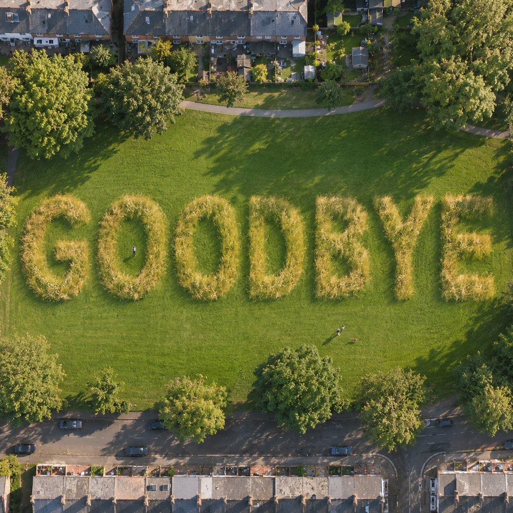
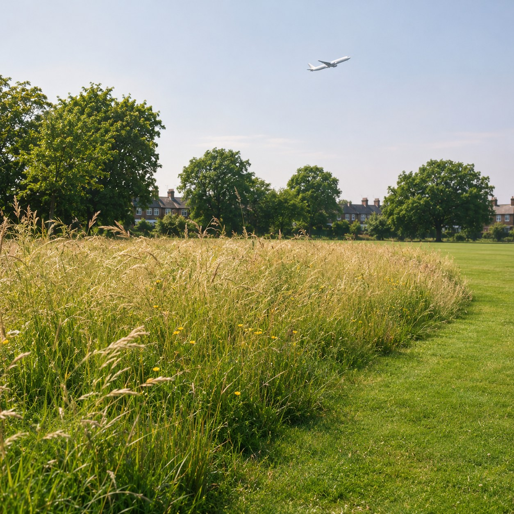

Only on Leaving


At the edge of the city, under the line the planes take as they climb away from the airport, there is a park with a long, flat lawn. Last spring, with the council's leave, the keepers stopped mowing seven shapes in the middle of it. By June the grass inside them stood knee high, pale and full of seed, and the lawn around them was cut short and green. From the planes it reads GOODBYE.
From the park it reads nothing. Walk across and you pass through a strip of tall grass, then a short stretch, then a curve of tall grass again. A child runs into the O and out the other side. A man eats his lunch in the middle of the B. Everyone in the park is inside the word, and that is the one place it cannot be read.
A goodbye is usually said by someone who stays to someone who goes. This one has no one saying it. Nobody below is waving. It is said by the ground, to whoever happens to be leaving, and only the leaving can read it. For a few seconds, as the plane turns over the roofs, it is as large as it will ever be. Then it is a mark, then nothing, and the window fills with cloud.
The White Horse on the hill above Uffington is about three thousand years old, and from the hill itself you cannot make out its shape. It reads best from the air, or from far across the valley. No one knows who it was cut for. For centuries people from the villages climbed up every few years to scour the chalk clean, because if they had stopped, the grass would have taken it back.
This word will last one summer. In the autumn the whole lawn will be mown short, and it will be gone from the only place that never saw it.
Somewhere above the clouds, someone will tell the person in the next seat that a field said goodbye to them. They will not quite be believed.